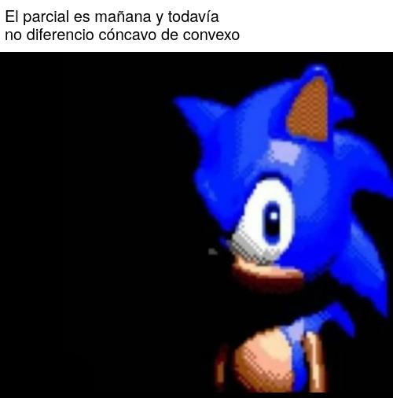
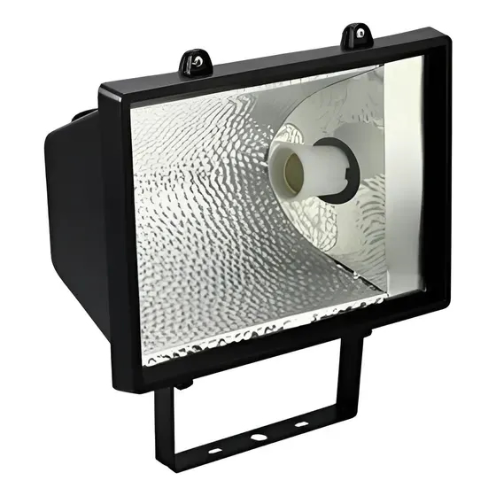
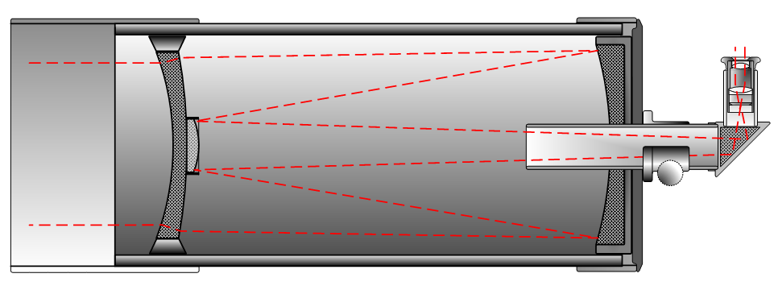

# Repaso de los tipos de espejo ## Repaso de los tipos de espejo: Cómo son los
signos
Repaso de los tipos de espejo: Cómo son los signos Por convención, la
distancia objeto-espejo $`D_o`$ es positiva. Espejo cóncavo
Espejo convexo
## Repaso de los tipos de espejo: Ecuación de espejos curvos
Repaso de los tipos de espejo: Ecuación de espejos curvos La ecuación de
espejos curvos
``` math \frac{1}{f} = \frac{1}{D_o} + \frac{1}{D_i} ``` $`D_o`$: Distancia
del objeto al espejo $`D_i`$: Distancia de la imagen al espejo $`f`$:
Distancia focal del espejo ($`C=2f=R`$)
## Repaso de los tipos de espejo: Cómo distinguirlos
Repaso de los tipos de espejo: Cómo distinguirlos

## Repaso de los tipos de espejo: CUCHARA
Repaso de los tipos de espejo: CUCHARA
## Repaso de los tipos de espejo: Espejo Cóncavo
Repaso de los tipos de espejo: Espejo Cóncavo Espejo cóncavo

## Repaso de los tipos de espejo: Espejo Convexo
Repaso de los tipos de espejo: Espejo Convexo Espejo convexo
Maksútov-Cassegrain

## Repaso de los tipos de espejo: Comparativa de los dos
Repaso de los tipos de espejo: Comparativa de los dos Espejo cóncavo
Espejo convexo
# Diagrama de rayos ## Diagrama de rayos: Reglas
Diagrama de rayos: Reglas Podemos usar 3 rayos para ubicar la imagen: 1. Un
rayo **paralelo al eje**, después de reflejarse, pasa por el **punto focal**
$`F`$ de un *espejo cóncavo* o parece provenir del punto focal *(virtual)*
de un *espejo convexo*. 2. Un rayo que pasa por el **punto focal** $`F`$ (o
avanza hacia éste) se refleja **paralelamente al eje**. 3. Un rayo a lo
largo del radio que pasa por el **centro de curvatura** $`C`$, o se acerca a
él, intersecta la superficie en dirección normal y se refleja de regreso por
su trayectoria original.
## Diagrama de rayos: Reglas resumidas
Diagrama de rayos: Reglas resumidas Resumen: 1. **Paralelo al eje**
$`\rightarrow`$ **Foco** 2. **Foco** $`\rightarrow`$ **Paralelo al eje** 3.
**Centro** $`\rightarrow`$ **Centro** (Se refleja sobre sí mismo)
# Diagrama de rayos: Ejemplos ## Diagrama de rayos: Espejo Convexo
Diagrama de rayos: Espejo Convexo Las reglas aplican al espejo convexo:
## Diagrama de rayos: Espejo Convexo, Rayo 1 ## Diagrama de rayos: Espejo
Convexo, Rayo 2 ## Diagrama de rayos: Espejo Convexo, Rayo 3 ## Diagrama de
rayos: Espejo Cóncavo
Diagrama de rayos: Espejo Cóncavo Las reglas aplicadas al espejo cóncavo
## Diagrama de rayos: Espejo Cóncavo, Rayo 1 ## Diagrama de rayos: Espejo
Cóncavo, Rayo 2 ## Diagrama de rayos: Espejo Cóncavo, Rayo 3 # El espejo
cóncavo...
El espejo cóncavo...
# El espejo cóncavo es especial ## El espejo cóncavo es especial: Objeto entre
el vertice y el foco
El espejo cóncavo es especial: Objeto entre el vertice y el foco Distancia
de objeto entre el foco y el vértice ``` math 0 < D_o < F ```
## El espejo cóncavo es especial: Objeto en el foco
El espejo cóncavo es especial: Objeto en el foco Distancia de objeto igual a
la distancia al foco ``` math D_o = F ```
## El espejo cóncavo es especial: Objeto entre el centro y el foco
El espejo cóncavo es especial: Objeto entre el centro y el foco Distancia de
objeto, entre el centro y el foco ``` math F < D_o < C ```
## El espejo cóncavo es especial: Objeto en el centro
El espejo cóncavo es especial: Objeto en el centro Distancia de objeto igual
a la distancia al centro ``` math D_o = C ```
## El espejo cóncavo es especial: Objeto más allá del centro
El espejo cóncavo es especial: Objeto más allá del centro Distancia de
objeto mayor a la distancia del centro ``` math C < D_o ```
## El espejo cóncavo es especial: Je todos juntos
El espejo cóncavo es especial: Je todos juntos
Objeto entre foco y vértice
Objeto entre el foco y el centro
Objeto más allá del centro
Objeto en el centro
Objeto en el foco
# Espejos, TODOS LOS ESTILOS
Espejos, TODOS LOS ESTILOS Espejo cóncavo, Cómo queda la imagen según el
valor de $`D_o`$
Espejo convexo, Cómo queda la imagen según el valor de $`D_o`$